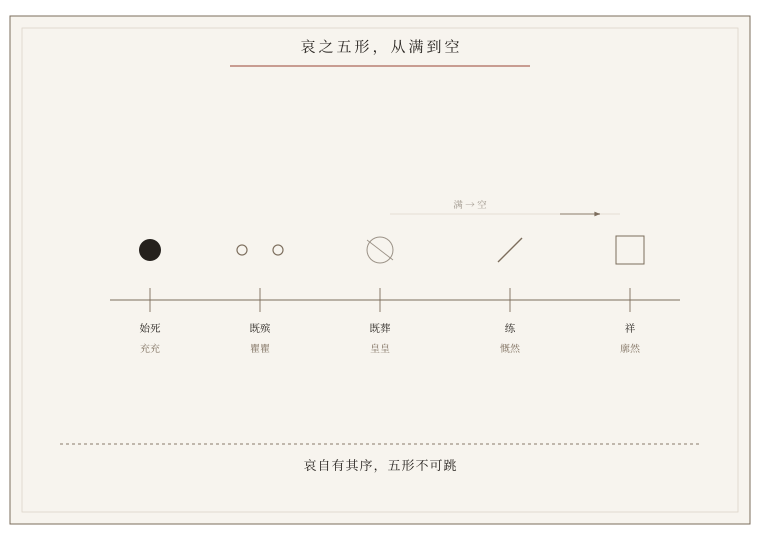

檀弓上 · 三·十八 · 第 221 课
始死，充充如有穷；既殡，瞿瞿如有求而弗得；既葬，皇皇如有望而弗至；练而慨然；祥而廓然。注「皆忧悼在心之貌」「求犹索物」。
说什么事：一个人从死到祥，心经过五道形。
落在哪一层：礼，兼及礼意与情。论哀之五个阶段。
为何编在此位：上节论死之正，此节论哀之序。正与哀，是丧礼的两条骨干。
【经】始死，充充如有窮；既殯，瞿瞿如有求而弗得；既葬，皇皇如有望而弗至；練而慨然；祥而廓然。
【注】皆忧悼在心之貌也。求犹索物。
【疏】此一节论孝子居丧，哀悼之状，随节而变。「充充如有穷」者，事尽理屈为穷，言亲始死，孝子之心充塞，如有穷尽。「瞿瞿如有求而弗得」者，「瞿瞿，眼目速瞻之貌」，如有求索而不得。「皇皇如有望而弗至」者，「皇皇犹栖栖」，言心无所依，如有望于人而弗至。「练而慨然」者，练是小祥，十三月，孝子至此，叹慨日月若驰。「祥而廓然」者，祥是大祥，二十五月，孝子至此，情意寥廓，不复有哀，然犹不乐而已。
充充 注「皆忧悼在心之貌」。心满塞而无所容。
穷 疏「事尽理屈为穷」。
瞿瞿 注「瞿瞿，眼目速瞻之貌」。
皇皇 注「皇皇犹栖栖」。心无所依。
练 小祥，十三个月。
慨然 疏「叹慨日月若驰」。
祥 大祥，二十五月。
廓然 疏「情意寥廓，不复有哀，然犹不乐而已」。
初死之时，心里满满地如同到了尽头；殡后，两眼急急地像在索求什么却得不到；葬后，心中惶惶地像在望什么人却等不来；到练祭时，只是慨叹；到大祥时，便觉空阔。
此节五句，五字为主：充、瞿、皇、慨、廓。郑注一句「皆忧悼在心之貌」。这是古人对情的一次极精确的素描——从满到空，从急到缓，从有到无。最妙的是最后一句「廓然」：不是喜，也不是哀，是哀尽之后的那片空。
第一层 充充 亲始死，心满无一隙。疏解「穷」为「事尽理屈」——凡可为之事都做尽了，凡可说之理都说到这里了，再无一条路可走。此是哀之极。
第二层 瞿瞿 既殡，人已入棺，事已定，而心犹在寻。疏「眼目速瞻之貌」。此时人常有一种错：还想着他会回来。礼以「求而弗得」四字接住这一层。
第三层 皇皇 既葬，土已覆，归家而心无所依。疏「皇皇犹栖栖」，如孔子之栖栖。此时所望者已不在人世，而人犹望之。
第四层 慨然与廓然 练而慨，是知日月已驰而哀稍杀；祥而廓，是哀已尽而心空。疏说「不复有哀，然犹不乐而已」——不作乐，不是尚有哀，是敬未散。
与今日何干 凡遭大丧者，人常劝其「早些走出来」。此节说明：哀自有其序，五道形各有一段，不能跳。跳过「皇皇」直接到「廓然」，那不是走出来，是没有走。
| 左 | 右 |
|---|---|
| 始死，充充如有穷 | 事尽理屈，心无一隙 |
| 既殡，瞿瞿如有求而弗得 | 眼目速瞻，犹在寻人 |
| 既葬，皇皇如有望而弗至 | 心无所依，犹在望人 |
| 练而慨然 | 十三月，叹日月若驰 |
| 祥而廓然 | 二十五月，情意寥廓，犹不乐 |
| 五者皆忧悼在心之貌 | 是实写，非比喻 |
画同一间屋的五次，从左至右横排五小幅，各以一道浅色竖线相隔，室内陈设与视点完全相同，只换时间与人的姿态。第一幅：地上新设的席，人（孝子，衣粗麻）伏在席侧，身满占画面。第二幅：屋角多了一具已殡的棺，人跪在棺旁，头微侧，向门外看。第三幅：棺已不在，屋中空，人立在新覆的土堆模型前（门外露出一小片土），双手下垂，望远处。第四幅：人坐于席，衣已稍整，一手支颐。第五幅：人坐，衣更整，身前一只素琴未弹，屋中空阔。五幅中不写文字。赭色只用在第五幅素琴的一弦上。
